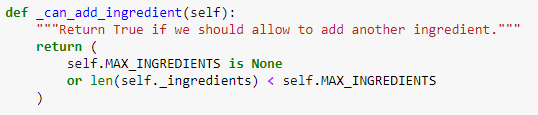
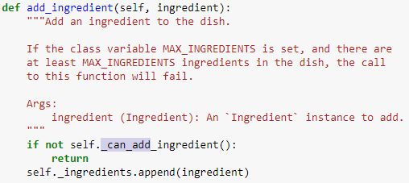
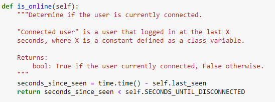
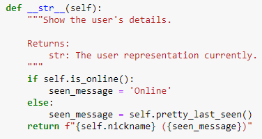
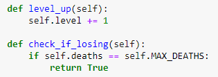

אשמח אם תוכלו להסביר לי קצת יותר,
בדוגמא של המחלקה Dish הוסיפו קו תחתון לפעולה can_add_ingredient_

ההסבר היה שזוהי פעולה שמטרתה לשימוש פנימי בלבד.
את זה אני מצליח להבין כי הרי זוהי פעולה שהשימוש שלה נובע כתנאי בתוך פונקציה:

מה שאני לא מצליח להבין, הוא איך אני יודע באיזה מצב פונקציה שכתבתי כחלק ממחלקה היא פונקציה פנימית מוגנת ושאצטרך להוסיף לה קו תחתון מתחת,
לדוגמא בתרגיל ‘מהנשמע’, הפעולה is_online בעלת שימוש דומה, וגם כאן מחזירה true או false:

והשימוש שלה בתוך הפונקציה str:

אם כך, אני מגיע לתרגיל כמו אורטל קומבט 2, ולפחות במקרה שלי אני יכול להעיד שיש לי המון פונקציות עזר שאני משתמש בהן בתוך המחלקה, לדוגמא: (בכוונה השתמשתי ב-2 פונקציות בעלות שימוש שונה)

כמו שאפשר לראות מהדוגמא, הפונקציה level_up שמעלה את השחקן רמה, והפונקציה check_if_losing שמחזירה True אם השחקן מת MAX_DEATHS שהוא 3 פעמים.
בדוגמא כמו שנתתי (ובאופן כללי), איך אני יכול לקבוע אילו פונקציה צריכות להיות מוגנות, ואילו פונקציות לא? אני מבין שמדובר על החלטת בונה הקוד שהרי הוא זה שמחליט אילו פעולות צריכות להיות מוגנות, אבל באותה מידה אני יכול בתור בונה הקוד להגיד שאני לא רוצה שיגעו בכלל בקוד ולהוסיף לכל הפעולות קו תחתון בגישה של “בניתי את הקוד שכל חלק יעבוד עם שאר החלקים ואל תהרסו אותו”.
כמובן שזו לא הגישה שלנו, ולכן אני שואל.
תודה.
לייק 1
orpazf
השאלה שאמורה לסייע לך להחליט לדעתי היא “האם אני רוצה שהמשתמש יוכל להשתמש בתכונה הזו”.
מי שרוצה להרכיב מנה כנראה לא רוצה לדעת האם הוא יכול או לא להוסיף מצרך נוסף - זה לא משהו שאמור לעניין אותו בבואו להרכיב מנה. זה כן משהו שמשמש לך כפונקציית עזר שאינה עניינו ואין לו שימוש בה. אם תרצה להנגיש לו את המידע לבטח תעדיף לעשות זאת בדרך אחרת, ע"י פונקציות אינדיקטיביות יותר, למשל אחת שמחזירה את מספר המצרכים מהם מורכבת המנה כרגע או את מספר המצרכים המקסימלי, או אולי בכלל פונקציה שמחזירה כמה מצרכים הוא עוד יכול להוסיף. אבל בדיקת הנכונות האם הוא יכול או לא להוסיף לא צריכה ליפול עליו, הוא לא צריך להפריד למקרים ולהתחיל להרהר האם הוא יכול או לא להוסיף עוד רכיב. אתה מטפל בזה - אז זה צריך לרדת ממנו.
לעומת זאת, אני חושבת שבהרבה אפליקציות ואתרים למיניהם אתה מאוד מעוניין לדעת האם מישהו מחובר כעת או לא. זו לא רק מתודת עזר שבה משתמשים בפונקציה אחרת, זו מתודה שבהחלט עומדת בפני עצמה ומספקת מידע מעניין. מספיק מעניין גם כדי שנציג את זה כחלק מהמידע שבחרנו להציג על המשתמש במחרוזת שמייצגת אותו.
אז בעצם אין לזה תשובה חד משמעית, אבל נסה לחשוב אתה - האם אתה רוצה שהמשתמש יוכל לגשת ולהעלות לשחקן את הרמה? אם כן - תשאיר את זה נגיש. אם לא - תרמוז למשתמש במחלקה שלך בעדינות שזה לא לעיניו - ובקש ממנו ברוב טובו לסלק מעסקיהם של אחרים את אפו הגדול שלא כדרך טבע.
לעומת זאת, האם אתה רוצה לאפשר למשתמש לבדוק בעצמו האם שחקן מפסיד? בהחלט ייתכן שכן. אין כאן תשובה חד משמעית, אבל זה לא אמור לפגוע בקוד שלך להנגיש האם שחקן עף מהמשחק או לא, וייתכן שזה משהו שהמשתמש ישמח לדעת אם למשל המשחק קורה בשלבים והוא רוצה לדעת מי כבר עף על-מנת לשנות את ההימור שלו לשחקן אחר או סתם כדי לדעת. ייתכן שמישהו שירצה לכתוב משחק בהתבסס על המחלקה ירצה לדעת האם שחקן כלשהו כבר מת על-מנת להיות מסוגל להחיות אותו כזומבי ולשלוח אותו למשימה אחרת למשל, או כדי לשלוח אותו להתמודד בבית הניחומים. האפשרויות רבות. בעיניי זה משהו שלא פוגע אם למשתמש תהיה גישה - הוא לא מאפשר לשחק עם השחקן אלא רק לקבל מידע על מצבו - ולכן זו מתודה שלדעתי ראוי להשאיר חשופה.
5 לייקים
DrorBiton
תודה רבה, סידרת לי את זה מעולה בראש
2 לייקים
DissonantHarmony
אני חייב לציין שאני קצת מבולבל.
עד עכשיו חשבתי שכשאני כותב מחלקה - היא אמורה לשמש מתכנת. (כמו שאנחנו משתמשים במודולים, ולא רואים את הקוד שלהם, אבל יש לנו גישה לייצר כל מני ישויות של מחלקות משם, ולהפעיל עליהם עליהם כל מני מתודות, שנכתבו עבורנו מבעוד מועד).
למשל: המתכנת עשוי לרצות לקרוא לפונקציה שמעלה שחקן רמה, ולשלב אותה בקוד שלו בבכל מני מצבים (כמו פרס על הישג מיוחד, או אכילת איזו סוכריה נדירה שגורמת לרמה של שחקנים לעלות), ואיו לי בעיה שהמתכנת יעשה בה שימוש כאוות נפשו.
זה שונה בעיניי, משחקן, שאני לא רוצה שיוכל לשלוט ברמה שלו כאוות נפשו, אבל כן מוכן לאפשר לו להציץ בכל מני מצבים במשחק, ולקחת החלטות…אבל השחקן לא אמור לראות קוד בכלל!
-הרושם שקבלתי, הוא שאני רוצה להחביא פונקציות שלא ממש התכוונתי שמישהו יעשה בהן שימוש. (הן שם, בשבילי, כדי לייצר לעצמי קוד שנוח לעבוד אתו).
כלל האצבע שמנחה אותי: אם מתכנת כותב את שם הישות, ואז נקודה, ואז לוחץ על טאב - האם הוא רוצה לראות שם את המתודה? או שזה לא אמור לעניין אותו, אלא לפעול מאחורי הקלעים, ולכן סתם מוסיף לו באלגן?
-אוקצור: חשבתי שהבנתי.
אבל עכשיו אני שוב מלובלב.
למה לי לא לרצות לאפשר למשתמש את הכלי
orpazf
גם מתכנת אחר הוא משתמש בקוד שלך, אבל בניגוד אליך הוא לא מכיר את הקוד הזה כמו את כף ידו והוא רוצה לעבוד עם הקוד הזה ככה שיקיים את כל מה שהבטחת בתיאור המחלקה. אם תיתן לו גישה למתודות שיכולות לעקוף את מה שהבטחת - נגיד אם הוא יכול להעלות את הרמה של השחקן ככה שלא תתקיים המשוואה שנותנת את הקשר בין exp לרמה - הוא עלול לעשות את זה בטעות. אם הוא לא שם לב לכמה מצרכים יש ושהוא כבר לא יכול להכניס הוא עלול להאריך את הרשימה ישירות ולא לנסות לעשות את זה דרך המתודה שלך.
באופן כללי רצוי שהקוד שלך ירמוז לאנשים באיזה מתודות ודברים הם אמורים להשתמש ובמה הם לא אמורים לגעת ישירות אלא דרך פעולה אחרת. לא מן הנמנע שאדם שביקש לראות את רשימת השחקנים וגילה שחסר בה השחקן האהוב עליו ינסה להוסיף אליה שחקן ישירות מבלי לדעת שהוא אמור לגשת לרשימה רק דרך מתודה מיוחדת ושזה אסור באמצע משחק קיים. אבל אם תכוון אותו לעשות את זה רק דרך הפונקציה הייעודית הוא יגלה שהוא עושה משהו לא בסדר.